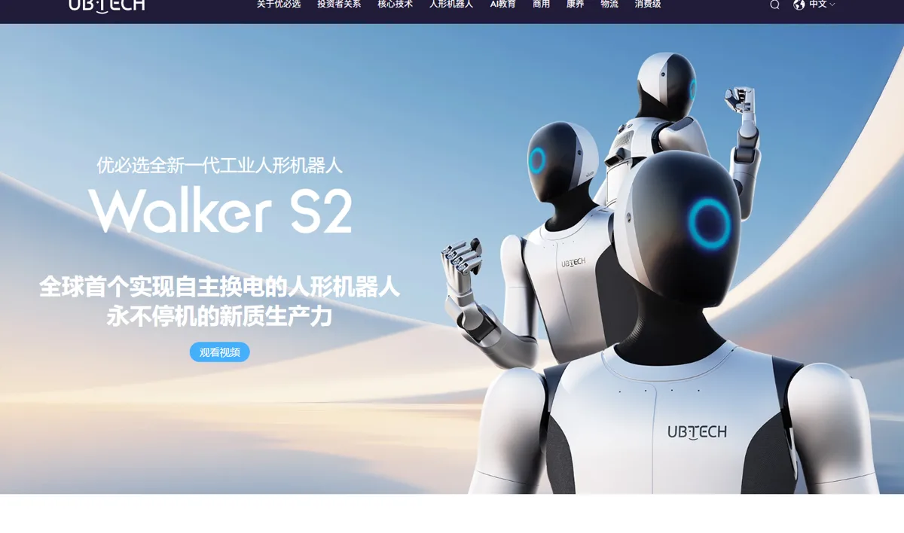
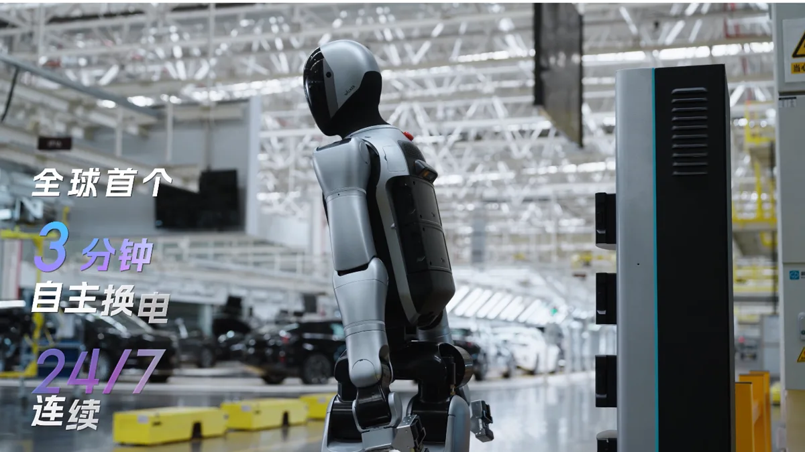
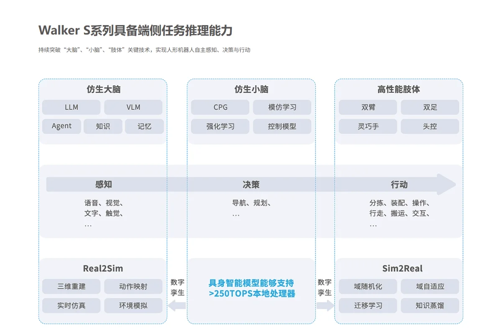
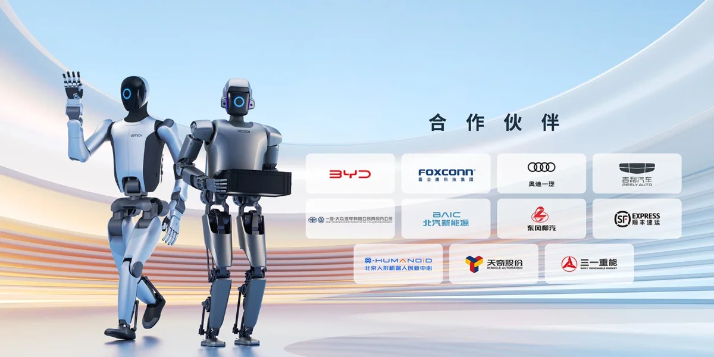

优必选深圳市优必选科技股份有限公司（UBTech Robotics，9880.HK）
让人形机器人真正进厂“打工”最多的中国公司：Walker S2 主打 3 分钟自主换电、24 小时连续作业，客户包括比亚迪、吉利、富士康、空客；2026 上半年全尺寸人形收入 5.9 亿元、毛利率 66.8%，但公司仍在亏损，六年累亏超 50 亿元。
一页结论
- 押注工业场景：全尺寸人形收入的 96% 来自工业与行业定制，机器人在汽车、3C、半导体、物流产线做搬运、分拣、上下料S1S2
- 订单多但集中度上升：2025 年 Walker S2 订单金额突破 13 亿元；2026 上半年单一客户贡献 24% 收入，身份未披露S2S5
- 用并购补制造短板：2025-12 宣布以约 16.65 亿元收购深交所上市公司锋龙股份 43% 股份，获得零部件与制造能力，同时打通 A 股资本通道S1S5
- 盈利时间表首次明确：CEO 周剑称争取 2026 年第四季度单季 EBITDA 转正，单季盈亏平衡目标仍为 2027 年第四季度S2
- 现金与回款压力：6 月末现金及等价物 23.26 亿元，比年初少一半多；应收账款净额 16.8 亿元、存货 9.85 亿元均快速上升S1S2
01公司介绍
| 项目 | 内容 |
|---|---|
| 公司 | 深圳市优必选科技股份有限公司，2012 年由周剑在深圳创立，周剑任董事长兼 CEOS7S2 |
| 官网 | ubtrobot.comS4 |
| 上市 | 2023-12-29 港交所主板上市，发行价 90 港元，“人形机器人第一股”S1S4 |
| 定位 | 官方称“人形机器人的领导者和智能服务机器人领航企业”，打造“硬件 + 软件 + 服务 + 运营”生态S4 |
| 业务 | 工业人形（Walker S 系列）、商用服务人形（Walker C1）、超仿生家庭人形（优世界 U1）、教育（天工行者、UGOT）、物流、消费硬件；2026-04 起并表锋龙股份园林机械与零部件S1S4 |
| 融资 | 2025 年三次配售募资净额约 63.42 亿港元S1 |

02公司战略
优必选的路线是“先工业、再商用、后家庭”，并用资本手段补齐零部件、芯片和产能。
- 工业优先：Walker S 系列进入多家车厂实训，2025 年 11 月 Walker S2 开始量产交付S4S5
- 多场景扩展：2026-06 发布商用服务人形 Walker C1 与超仿生人形优世界 U1，分别瞄准商业服务与家庭S1S4
- 产业链整合：收购锋龙股份（末端执行器、伺服驱动器等零部件量产）、与沐曦股份合资研发端侧芯片、与西门子合作建万台产能工厂S1
- 群体智能：推出“群脑网络”与 Co-Agent，实现多台、多场景、多任务人形机器人协同实训S4
03产品定位与产品线
| 产品 | 定位 | 状态 |
|---|---|---|
| Walker S2 | 工业人形，3 分钟自主换电、24/7 连续作业、腰部 ±162° 转动S4 | 2025-11 量产交付；Walker S3 交付因广西水灾延误S2S5 |
| Walker C1 | 商用服务人形S1 | 2026-06 发布，上半年未产生收入S1 |
| 优世界 U1 | 超仿生家庭人形S1 | 此前披露订单超 1.3 万台，交付延误S1S2 |
| 天工行者 / UGOT | 教育科研S4 | 教育板块上半年收入 1.22 亿元，同比下滑 49%S1 |
| Cruzr 等 | 商用服务机器人S4 | 在售 |

04主要功能与技术路线

05解决方案与场景
| 场景 | 任务 | 代表客户 |
|---|---|---|
| 汽车制造 | 搬运、分拣、质检、上下料S1S3 | 比亚迪、吉利、一汽-大众奥迪、东风柳汽、北汽新能源S1S4 |
| 3C 与半导体 | 产线物料搬运S2 | 富士康；德州仪器采购 Walker S2 并在产线部署调试S1S5 |
| 航空制造 | 产线作业S1S2 | 空客S1 |
| 物流 | 智慧物流S2 | 顺丰S4 |
| 数据采集 | 数采中心与多机协同实训S4 | 北京人形机器人创新中心等S4 |

06商业模式
| 模式 | 说明 |
|---|---|
| 行业定制解决方案 | 人形机器人 + 软件 + 部署，5.69 亿元人形收入来自此类S2 |
| 整机销售 | 教育、商用、消费产品S1 |
| 零部件与制造 | 锋龙股份园林机械、汽车与液压零部件，上半年 1.39 亿元S1S2 |
注意：5.90 亿元为“产品及解决方案收入”，可能包含软件与部署，不能简单除以 921 台得出约 64 万元的单台售价S2。
07上下游供应链与渠道
上游：芯片
与沐曦股份合资研发端侧芯片S1
08主要客户与落地
| 指标 | 数据 | 口径 |
|---|---|---|
| 2025 年全尺寸人形销量 | 1,079 台 | 年报S3 |
| 2026 上半年全尺寸人形销量 | 921 台，同比 +1947% | 中报，身高 160 cm 以上、算力不低于 200TS2 |
| 人形机器人总销量 | 16,123 台 | 含 15,202 台遥控、预编程或 160 cm 以下产品S2 |
| Walker S2 订单 | 2025 年订单金额突破 13 亿元 | 媒体统计S5 |
| 客户集中度 | 单一客户贡献 3.09 亿元，占 24% | 2026 上半年S2 |
客户进入合作名单不一定意味着机器人已在产线大规模常态化运行，部分项目可能仍处于测试验证或小批量部署阶段S2。
09营收与财务
10落地痛点
11近期动态
12潜在风险分析意见
| 风险 | 表现 | 可能程度 |
|---|---|---|
| 现金消耗与再融资 | 半年现金减少一半，依赖配售融资S1 | 高 |
| 应收账款与坏账 | 应收与存货快速上升，信用减值大增S1S2 | 高 |
| 客户集中 | 单一客户占 24%S2 | 中 |
| 全年目标落空 | 下半年需完成 22–27 亿元收入S2 | 中 |
| 估值参照变化 | 宇树上市后市场重新比较“进厂型”与“表演型”估值S1 | 中 |
“可能程度”为基于现有公开信息的判断，不是量化预测。
13综合结论分析意见
优势
- 工业场景真实收入
- 头部制造业客户名单
- 人形业务高毛利
劣势
- 持续亏损
- 回款慢
- 教育业务下滑
机会
- 产业链整合降本
- 商用与家庭新产品
- A 股资本通道
威胁
- 宇树、智元的价格与出货
- 单一客户依赖
对 AI 产品团队的启示
- ToB 落地的胜负手是“持续作业”：自主换电、24/7 运行直接回应工厂客户最关心的利用率问题。
- 收入≠现金：大客户定制项目带来收入增长，也带来回款周期和坏账风险，商业化指标要看到现金流。
- 口径透明才能比较：优必选主动区分全尺寸具身智能与非全尺寸产品，避免用总销量误导。
- 产业链整合是重资产路线：用收购换零部件与产能，能加快交付，但会大量消耗现金。
信息缺口
以下信息未找到可靠的公开来源，本报告不做推测。
- Walker S2 单台售价
- 单一大客户身份
- 2026 年 Walker S2 实际交付量
- 锋龙股份对人形零部件的实际供货规模
- 优世界 U1 订单的交付与回款
来源
A 官方 · B 权威媒体或第三方 · C 社区（仅用于口碑与线索）。访问日期均为 2026-11-02。
- S1 · B优必选中报：减亏趋势是真，盈利拐点还没到21 世纪经济报道 · 2026-08-29
- S2 · B优必选，首次给出盈利时间！新浪财经 · 2026-09-01
- S3 · BUBTECH 2025 Report Card: Revenue from Full-Size Humanoid Robots Grows Over 22-Fold盖世汽车 · 2026-03
- S4 · A优必选官网（Walker S2、工业场景、公司简介）优必选 · 2026-11-02 访问
- S5 · B耗资16亿上演H吃A，优必选补齐制造拼图36 氪（节点AI观） · 2025-12
- S6 · B优必选上半年营收12.7亿：同比增104% 净亏2.8亿 市值420亿港元腾讯新闻 · 2026-08-28
- S7 · CUBtech RoboticsWikipedia · 2026-11-02 访问